Arshad Mohammed
Ph.D. Candidate | Aerospace Engineering
Supersonic Jet Acoustics • Aeroacoustics • Flow Control • Experimental Fluid Mechanics • Multiphysics Simulation • Rheological Modeling
Ph.D. Candidate | Aerospace Engineering
Supersonic Jet Acoustics • Aeroacoustics • Flow Control • Experimental Fluid Mechanics • Multiphysics Simulation • Rheological Modeling
I am a Ph.D. Candidate in Aerospace Engineering specializing in supersonic jet acoustics, aeroacoustics, flow control, nozzle design, and experimental fluid mechanics. My research focuses on understanding and reducing jet noise through advanced nozzle designs, fluidic injection techniques, and high-fidelity experimental diagnostics.
My work combines experimental testing, acoustic measurements, Schlieren imaging, Particle Image Velocimetry (PIV), modal analysis, and computational modeling. I also have industry research experience in rheological material modeling, CFD validation, Dymola-based simulation frameworks, and manufacturing process simulation.
University of Cincinnati — In Progress
Research focused on supersonic jet acoustics, nozzle flow physics, jet noise reduction, and experimental aeroacoustics.
University of Cincinnati
Coursework and research in aeroacoustics, advanced propulsion, finite element analysis, gas turbine combustion, robotics, and engineering project management.
Jawaharlal Nehru Technological University Kakinada
Coursework included automotive engineering, machine design, CAD/CAM, production technology, fluid mechanics, heat transfer, and thermal engineering.
Gas Dynamics & Propulsion Lab | University of Cincinnati | Aug 2020 – Present
P&G Digital Accelerator | University of Cincinnati | Nov 2021 – Present
University of Cincinnati | Dec 2019
Tata Motors | May 2019
RINL – Vizag Steel Plant | Jan 2018
Investigating how nozzle exit shape influences the acoustic behavior of supersonic jets. This work compares circular, square, and modified square convergent-divergent nozzle designs to evaluate whether square nozzles can approach the lower-noise behavior of circular nozzles while maintaining geometric advantages for future thrust-vectoring applications.
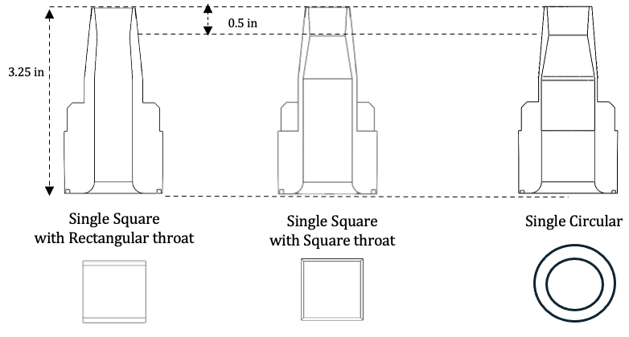
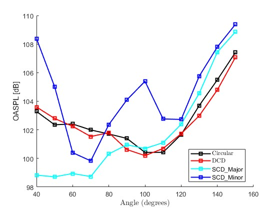
Studying how upstream chamber geometry affects twin supersonic jet acoustics even when nominal nozzle design conditions remain the same. This project highlights how facility-level implementation details can strongly influence screech feedback mechanisms, multimode behavior, and repeatability across different experimental studies.
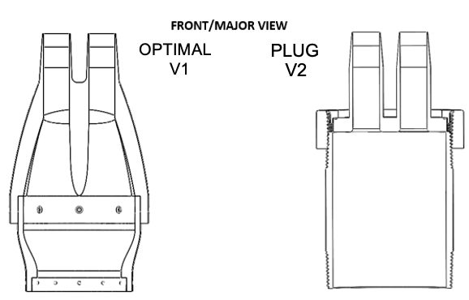
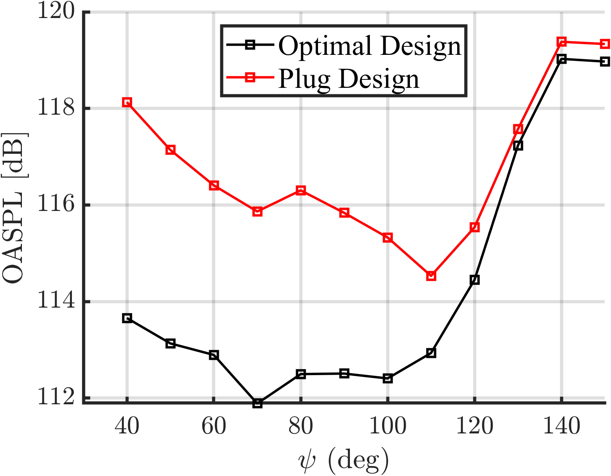
Investigating the influence of throat location on circular supersonic nozzle acoustics. This work examines an underexplored nozzle design parameter and evaluates how throat placement affects jet development, shock-cell structure, and acoustic radiation.
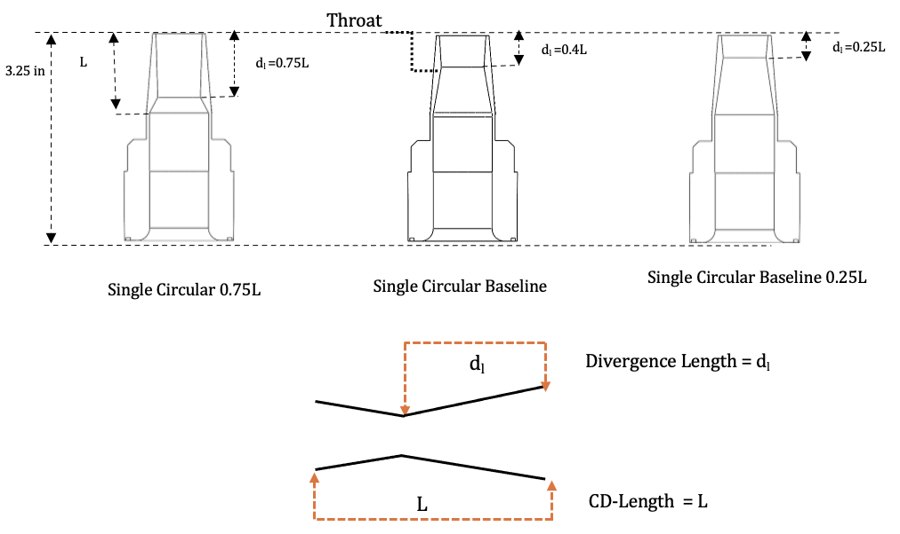
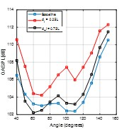
Assisted in experimental studies of fluidic injection and trapezoidal nozzle configurations for supersonic jet noise reduction. These studies focus on how injection improves flow mixing, modifies turbulent structures, and affects the acoustic behavior of non-axisymmetric supersonic jets.
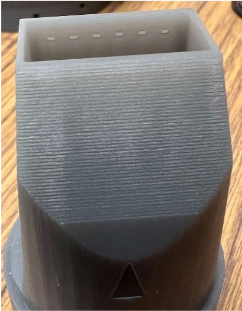
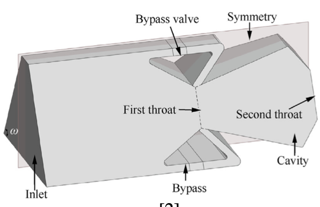
Applying advanced experimental and data-analysis methods to understand turbulent flow structures and acoustic radiation in supersonic jets. Methods include Schlieren visualization, SPOD, spectrogram analysis, wave-number analysis, and modal processing techniques.
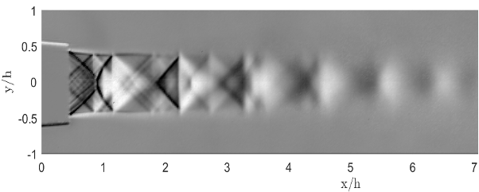
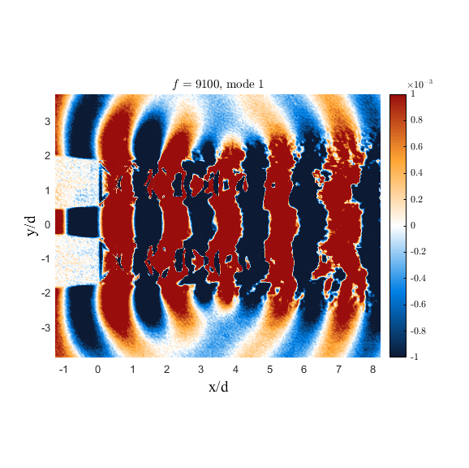
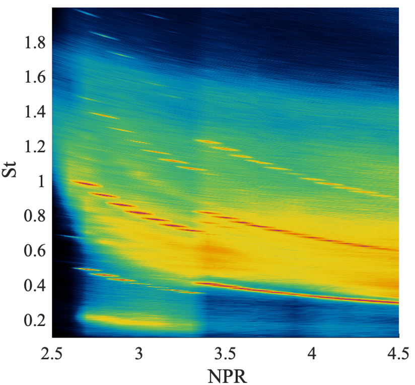
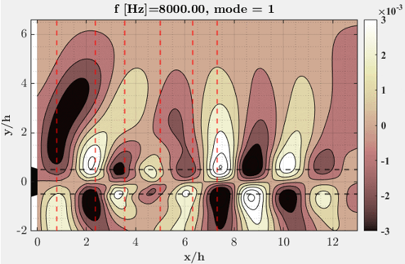
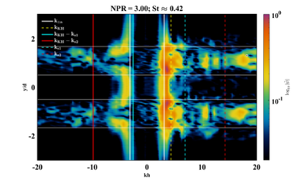
Far-field acoustics, near-field acoustics, microphone measurements, Schlieren imaging, Particle Image Velocimetry (PIV), hot-wire anemometry, pressure measurements, flow visualization, experimental design, facility development, uncertainty analysis, and repeatability studies.
Fast Fourier Transform (FFT), wave-number decomposition, acoustic surrogate wave-packet analysis, Proper Orthogonal Decomposition (POD), Spectral Proper Orthogonal Decomposition (SPOD), spectrogram analysis, statistical analysis, data visualization, and large-scale experimental data processing.
ANSYS Fluent, COMSOL Multiphysics, Flow-3D, Dymola, Modelica, HPC-based simulation workflows, verification & validation (V&V), rheological material modeling, adhesive flow simulation, and system-level engineering simulations.
MATLAB, Python, LabVIEW, Modelica, automation workflows, scientific computing, engineering software integration, and data processing.
SolidWorks, CATIA V5, Siemens NX, AutoCAD, additive manufacturing (3D printing), nozzle design, experimental hardware development, manufacturing processes, and engineering drawing interpretation.
JMP Statistical Discovery Software, nonlinear curve fitting, regression analysis, parameter estimation, rheological characterization, Cross model, Meter model, Carreau-Yasuda model, and Master Curve methodologies.
LabVIEW Data Acquisition Systems, high-speed and low-speed PIV laser systems, Schlieren systems, microphone arrays, pressure measurement systems, traversing systems, fluidic injection hardware, experimental calibration procedures, and HPC computing environments.
Winner of a nationwide THANGS engineering design competition for the design of an autonomous fire-extinguisher robot. The project received the highest community engagement, downloads, and votes, resulting in a $5,000 award grant.
Awarded the FlyOhio Scholarship in recognition of academic excellence, leadership, and contributions to aerospace engineering research.
Led one of the largest student organizations at the University of Cincinnati, organizing professional, cultural, and networking events while managing executive committees, sponsorships, budgets, and community engagement initiatives.
Contributed experimental datasets used by researchers at Stanford University for computational validation studies and collaborative investigations of supersonic jet aeroacoustics, resulting in multiple co-authored publications.
Played a key role in the development, validation, and deployment of the Adhesive Network Flow Model (ANFM), a simulation framework utilized across Procter & Gamble manufacturing facilities worldwide, while providing training and technical support to engineers globally.
Author and co-author of 8+ AIAA conference papers and technical presentations covering supersonic jet acoustics, aeroacoustics, flow control, fluidic injection, nozzle design, rheological modeling, and computational validation studies.
Designed, built, and operated advanced experimental facilities for supersonic jet research, including custom nozzle hardware, fluidic injection systems, acoustic measurement systems, Schlieren imaging, Particle Image Velocimetry (PIV), and precision instrumentation for high-fidelity data acquisition.
My CV will be available here soon.
Email: mohamma4@mail.uc.edu
LinkedIn: linkedin.com/in/ArshadMohammedUC
Google Scholar: Add your Google Scholar link here
GitHub: github.com/Arshad3206